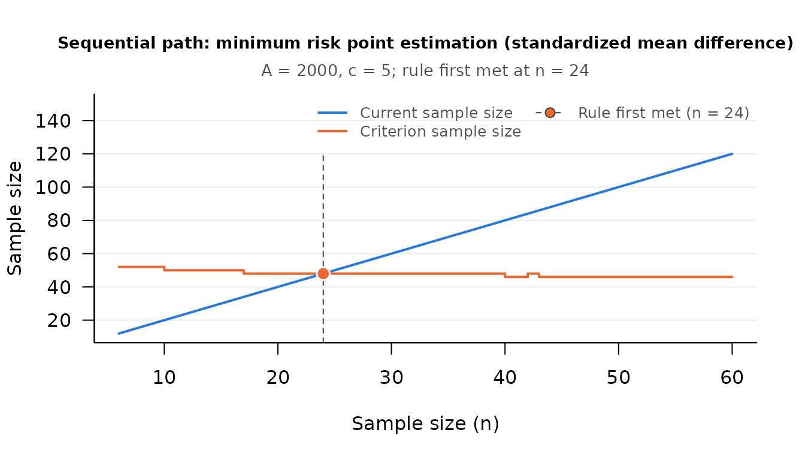

Minimum Risk Point Estimation of the Standardized Mean Difference
Source:vignettes/mrpe-smd.Rmd
mrpe-smd.RmdThe Research Question
The standardized mean difference, δ = (μ1 − μ2) / σ, expresses the difference between two group means in standard deviation units, so it is comparable across studies and measures. A common design question is how many participants to collect in each group. When participants are costly, and the two groups can have different costs per participant, collecting more data buys a more accurate estimate of δ and spends more of the budget.
Minimum risk point estimation (MRPE) balances the two. Chattopadhyay and Kelley (2017) develop a purely sequential procedure that estimates δ while minimizing a risk that combines squared estimation error with the cost of sampling. The procedure assumes normal populations with a common variance. It does not require that the variance or the effect size be known in advance; the data collected so far say whether to stop.
The Method
Write d for the sample standardized mean difference, the difference between the two sample means divided by the pooled standard deviation (Equations 2 and 3 of Chattopadhyay and Kelley, 2017). The risk prices squared estimation error by a constant A and charges a cost c per observation. With the large sample mean squared error of d, and group sizes n1 and n2, the approximate risk (their Equation 9) is
A {1 / n1 + 1 / n2 + δ2 / (2 (n1 + n2))} + c (n1 + n2)
With equal group sizes the risk is smallest at the optimal size per group (their Equations 10 and 11)
nc = (A / (2 c))1/2 ξ, with ξ2 = 2 + δ2 / 4
where it equals 4 c nc (their Equation 12). Because δ, and with it ξ, is unknown, the purely sequential rule estimates ξ from the data, with Vn2 = 2 + d2 / 4 for the d computed from n observations per group (their Equation 13), and stops at the first n at or beyond the pilot sample size with (their Equation 15)
n ≥ (A / (2 c))1/2 (Vn + n−γ)
The correction term n−γ, with γ a constant
strictly between 0 and 1/2 (the article suggests 0.49, the default of
the argument gamma), keeps the rule from stopping too
early. The pilot sample size per group is the larger of a minimum
m0 and (A / (2 c))1/(2 +
2γ), rounded up (their Equation 14).
The Sequential Workflow
seq_mr_smd_pilot() returns the pilot sample size, and
seq_mr_smd() evaluates the stopping rule on the data
collected so far (at least four observations per group, the smallest
pilot sample size the article allows). Its rows next_n1 and
next_n2 give the size each group should have at the next
check. Neither function collects data or keeps state. As with the other
minimum risk procedures there is no confidence level: the target is a
risk, not a confidence interval.
Suppose a management researcher is estimating the effect of a new onboarding program on employee engagement (measured on a standardized scale) relative to the standard onboarding. Each participant costs the same to recruit and measure, c = 5, and a unit of squared estimation error is priced at A = 2,000. The article builds A as the amount one would pay to have the estimate within a chosen distance of δ, divided by the square of that distance; a team that would pay 500 for an estimate within 0.5 has A = 500 / 0.52 = 2,000.
A <- 2000 # price of one unit of squared estimation error
cost <- 5 # cost per participant
pilot_n <- seq_mr_smd_pilot(A = A, c = cost)
pilot_n
#> [1] 6To have data to work with, 60 engagement scores per group are simulated here with a true standardized advantage of one half of a standard deviation for the program group; they stand for the participants in the order they would be recruited. The researcher collects the pilot sample from each group and evaluates the rule.
set.seed(113)
program <- rnorm(60, mean = 0.5, sd = 1)
control <- rnorm(60, mean = 0.0, sd = 1)
check <- seq_mr_smd(program[1:pilot_n], control[1:pilot_n], A = A, c = cost)
check
#> Sequential check (minimum risk point estimation (standardized mean difference))
#>
#> Current n : 12
#> Criterion n : 52
#>
#> smd : 0.2918833
#> risk : 733.7663
#> mean_1 : 0.2787034
#> mean_2 : -0.08942836
#> optimal_n1 : 26
#> optimal_n2 : 26
#> current_n1 : 6
#> current_n2 : 6
#> next_n1 : 7
#> next_n2 : 7
#>
#> Stopping rule met: FALSEAt the pilot sample size the estimate rests on a handful of
observations, so it can be far from the true value. The rule is not met,
and recruitment continues one participant per group at a time (the sizes
in the rows next_n1 and next_n2), with a new
check after each pair. In a study that is a call to
seq_mr_smd() after each pair. With the scores already in
hand, seq_path() makes the same sequence of checks in one
call.
path <- seq_path(seq_mr_smd, list(group_1 = program, group_2 = control),
A = A, c = cost)
attr(path, "stop_n")
#> [1] 24
plot(path, which = "criterion")
attr(path, "final_check")
#> Sequential check (minimum risk point estimation (standardized mean difference))
#>
#> Current n : 48
#> Criterion n : 48
#>
#> smd : 0.7137304
#> risk : 417.2794
#> mean_1 : 0.6370403
#> mean_2 : -0.1856612
#> optimal_n1 : 24
#> optimal_n2 : 24
#> current_n1 : 24
#> current_n2 : 24
#> next_n1 : 24
#> next_n2 : 24
#>
#> Stopping rule met: TRUEThe rule was first met at 24 participants per group, and that is
where the study ends. (The plot counts both groups together, as the
check does in its Current n and Criterion n
lines.) The reported smd is the minimum risk point estimate
of δ. MRPE returns a point estimate and no confidence interval, and at a
sample this small the estimate is not precise: the large sample standard
error of d at 24 per group is about 0.29, so an estimate of
0.71 for a true value of 0.5 is 0.7 standard errors from it. That is the
accuracy these constants price, an estimate within about 0.5; a more
accurate one takes a larger A relative to c.
seq_report() words the result for a methods section:
seq_report(path)
#> Sample size was determined with the sequential minimum risk point
#> estimation procedure for the standardized mean difference
#> (Chattopadhyay & Kelley, 2017), with a loss constant of A = 2,000 and a
#> sampling cost of c = 5 per observation. The stopping rule was evaluated
#> from the pilot sample size (n = 6 per group) onward, after each
#> additional observation per group, and was first met at a total sample
#> size of N = 48. At that sample size the estimate of the standardized
#> mean difference was 0.714.
#>
#> Reference
#> Chattopadhyay, B., & Kelley, K. (2017). Estimating the standardized
#> mean difference with minimum risk: Maximizing accuracy and
#> minimizing cost with sequential estimation. Psychological Methods,
#> 22(1), 94–113. doi:10.1037/met0000089Reproducing the Published Example
Chattopadhyay and Kelley (2017, pp. 105 to 106) illustrate the procedure with reading scores of children with high and low exposure to same language subtitling. Assessing one child costs 2.40 dollars, and the team would pay 2,500 dollars to estimate δ to within 0.5, so A = 2,500 / 0.52 = 10,000. The pilot sample size is 13 per group, and at the pilot data the estimate is 1.021484 and the rule is not met, as in the article.
seq_mr_smd_pilot(A = 10000, c = 2.40)
#> [1] 13
high_sls <- c(11, 7, 22, 13, 6, 9, 11, 16, 12, 17, 14, 8, 16)
low_sls <- c(3, 6, 10, 8, 14, 5, 12, 10, 6, 8, 13, 5, 9)
seq_mr_smd(high_sls, low_sls, A = 10000, c = 2.40)
#> Sequential check (minimum risk point estimation (standardized mean difference))
#>
#> Current n : 26
#> Criterion n : 164
#>
#> smd : 1.021484
#> risk : 1801.521
#> mean_1 : 12.46154
#> mean_2 : 8.384615
#> optimal_n1 : 82
#> optimal_n2 : 82
#> current_n1 : 13
#> current_n2 : 13
#> next_n1 : 14
#> next_n2 : 14
#>
#> Stopping rule met: FALSEThe article then supposes that sampling continues and that d
= 1.00 when n = 75 per group, where the rule is met for the
first time. The sibling package DMAR applies the same rule
to summary statistics, which shows the boundary:
attr(DMAR::mr_smd(d = 1.00, n = 74, A = 10000, sampling_cost = 2.40),
"is_satisfied")
#> [1] FALSE
attr(DMAR::mr_smd(d = 1.00, n = 75, A = 10000, sampling_cost = 2.40),
"is_satisfied")
#> [1] TRUEWith one cost and equal group sizes, seq_mr_smd() and
DMAR::mr_smd() give the same decision at every sample size;
seq_mr_smd() works from the raw data and also reports the
criterion.
Unequal Sampling Costs
When an observation costs more in one group than in the other, the
best design samples the less costly group more heavily. Chattopadhyay
and Kelley (2017) treat this case in the section “A General Scenario”
(pp. 106 to 107, Equations 17 to 21, with the supporting Appendix B,
Equations 41 to 43), and seq_mr_smd() implements that
procedure when c is a vector of two different costs,
c(c1, c2).
In the article’s notation, and in the formulas of this section,
subscript 1 marks the less costly group and subscript 2 the costlier
one. (In the argument c = c(c1, c2) the positions are group
1 and group 2, and either group may be the costlier one.) The risk
(their Equation 17) charges c1n1 + c2n2
for sampling. Setting its derivatives to zero (their Equation 41) shows
that the optimal sizes satisfy n2* =
n1* r(n1*), with (their
Equations 19 and 43)
r(n) = {1 + (c2 − c1) n2 / A}−1/2
and that n1* solves
n1* = (A / c1)1/2 [1 + δ2 / (2 {1 + r(n1*)}2)]1/2
The sequential procedure starts from the pilot sample sizes of their Equations 20 and 21, samples the less costly group one observation at a time, keeps the costlier group at n1r(n1) observations, rounded up, and stops at the first n1 with
n1 ≥ (A / c1)1/2 ([1 + d2 / (2 {1 + r(n1)}2)]1/2 + n1−γ)
Suppose a participant in the control group costs twice as much to recruit and measure as one in the program group, with costs of 4 and 8.
cost_2 <- c(4, 8) # program, control
pilot_2 <- seq_mr_smd_pilot(A = A, c = cost_2)
pilot_2
#> group_1 group_2
#> 9 9The article’s order is to add one participant to the less costly
group, bring the costlier group up to the size paired with it, and
check. The rows next_n1 and next_n2 of the
result hold exactly those sizes, for group 1 and group 2 as supplied, so
the loop only has to bring each group up to its row. It runs unchanged
whichever group is the costlier one; pairing the sizes the other way
around would oversample. The two groups grow at different rates, so this
is a loop that seq_path(), which takes the same number of
observations from each group at every stage, does not replace. The
scores are those simulated above, taken in the order the participants
would be recruited, so the two designs can be compared on the same
people.
n <- unname(pilot_2) # group sizes at the first check
repeat {
check <- seq_mr_smd(program[1:n[1]], control[1:n[2]], A = A, c = cost_2)
if (attr(check, "is_satisfied")) break
n <- check$value[check$term %in% c("next_n1", "next_n2")]
}
check
#> Sequential check (minimum risk point estimation (standardized mean difference))
#>
#> Current n : 46
#> Criterion n : 46
#>
#> smd : 0.7846619
#> risk : 451.9243
#> mean_1 : 0.6644519
#> mean_2 : -0.2089349
#> optimal_n1 : 28
#> optimal_n2 : 18
#> current_n1 : 28
#> current_n2 : 18
#> next_n1 : 28
#> next_n2 : 18
#>
#> Stopping rule met: TRUEThe less costly program group ends with more participants than the
control group, 28 against 18, where the single cost of 5 ended with 24
in each. The rule is decided group by group: optimal_n1 and
optimal_n2 are each group’s own criterion, and the rule is
met when each group has reached its own. Once it is met,
next_n1 and next_n2 equal the current sizes:
nothing more is called for. The estimate, 0.78, is 0.9 standard errors
from the true 0.5 (the large sample standard error at these sizes is
about 0.31): again a point estimate from a small sample, as accurate as
these constants price it and no more.
Three points about the two cost procedure matter to anyone comparing the package with the article.
- Equations 18 and 42 of the article, and the stopping rule built on
them, are printed with {1 + r(n1)} to the
first power. The derivatives in Equation 41 give the second power shown
above; only the second power minimizes the risk in Equation 17, and only
it reduces to Equation 10 when the costs are equal.
seq_mr_smd()uses the second power. For A = 50,000, costs of 2 and 8, and δ = 1, the printed form gives an optimal n1 of 183.4, while direct minimization of the risk gives 175.7 (both figures are in the Details of?seq_mr_smd). - The article’s two cost procedure does not reduce to its one cost
procedure when the costs are equal: its pilot uses A /
c1 where Equation 14 uses A / (2
c), and its correction term is (A /
c1)1/2n−γ where
Equation 15 has (A / (2 c))1/2n−γ.
seq_mr_smd()uses the one cost procedure whenever the two costs supplied are equal, and the two cost procedure whenever they differ. Two costs that differ only by rounding error (a relative difference of at mostsqrt(.Machine$double.eps), which is 1.5e-08, as between24 * 0.1and2.4) count as equal. - The article assumes that the first group is the less costly one.
seq_mr_smd()accepts the costs in either order.
What to Expect Before the Study
seq_mr_smd_sensitivity() runs the whole procedure many
times on simulated data with a known δ and compares the result with the
best fixed sample size. It answers, before any data are collected, how
many participants a choice of A and c implies and how
close the procedure comes to the minimum risk.
sens <- seq_mr_smd_sensitivity(true_value = 0.5, A = A, c = cost, G = 500,
seed = 2017)
sens
#> term value
#> true_value 0.5
#> loss_A 2000
#> cost_1 5
#> cost_2 5
#> replications 500
#> optimal_n1 20.3101
#> optimal_n2 20.3101
#> minimum_risk 406.2019
#> mean_n1 24.09
#> mean_n2 24.09
#> median_n1 24
#> median_n2 24
#> sd_n1 0.2933805
#> sd_n2 0.2933805
#> ratio_n1 1.18611
#> ratio_n2 1.18611
#> mean_estimate 0.5016093
#> mean_risk 421.4926
#> risk_efficiency 1.037643
#> se_risk_efficiency 0.02900019
#> regret 15.29067
#> pct_hit_max_n 0optimal_n1 and optimal_n2 are the fixed
sample sizes that minimize the risk if δ were known, and
minimum_risk is the risk there. The mean final sample size
is above the optimum, about 24 per group against 20
(ratio_n1), which is the price of the correction term at a
sample this small, and the realized risk is close to the minimum
(risk_efficiency, to be read against its Monte Carlo
standard error, se_risk_efficiency). The guarantees are
asymptotic: both ratios approach 1 as A / c grows.
With the article’s own settings the package reproduces its Tables 1 and
3 within Monte Carlo error, as the Details of ?seq_mr_smd
report; for example, for A = 50,000, c = 1, and δ = 0
the mean final sample size per group in 5,000 replications was 235.04
against an optimum of 223.6, and Table 1 of the article (p. 103) reports
235.04.
The same function accepts two costs, a batch size
(batch, the number of observations added between checks),
and a skewed population (distribution = "skewed"), which
shows what a violation of the normality assumption costs.
Relationship to Accuracy in Parameter Estimation
When the design goal is a confidence interval for δ of a target
width, and not the minimum of a loss that combines cost and error, use
the accuracy in parameter estimation procedure
seq_aipe_smd() (Kelley, Darku, & Chattopadhyay, 2018;
Kelley & Rausch, 2006; Maxwell, Kelley, & Rausch, 2008). In
DMAR, the fixed sample size counterpart
ss_aipe_smd() plans the sample size when a value of δ can
be supposed in advance.
References
Chattopadhyay, B., & Kelley, K. (2017). Estimating the standardized mean difference with minimum risk: Maximizing accuracy and minimizing cost with sequential estimation. Psychological Methods, 22(1), 94–113. doi:10.1037/met0000089
Kelley, K., Darku, F. B., & Chattopadhyay, B. (2018). Accuracy in parameter estimation for a general class of effect sizes: A sequential approach. Psychological Methods, 23(2), 226–243. doi:10.1037/met0000127
Kelley, K., & Rausch, J. R. (2006). Sample size planning for the standardized mean difference: Accuracy in parameter estimation via narrow confidence intervals. Psychological Methods, 11(4), 363–385. doi:10.1037/1082-989X.11.4.363
Maxwell, S. E., Kelley, K., & Rausch, J. R. (2008). Sample size planning for statistical power and accuracy in parameter estimation. Annual Review of Psychology, 59, 537–563. doi:10.1146/annurev.psych.59.103006.093735